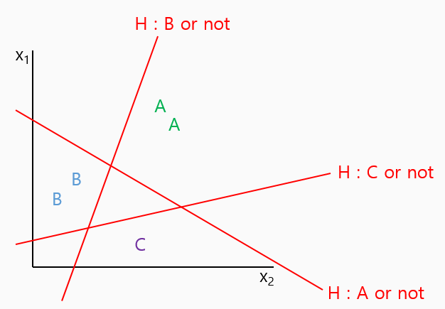
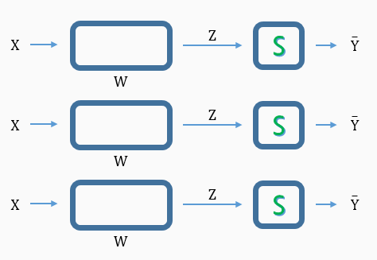
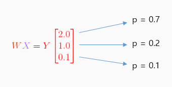
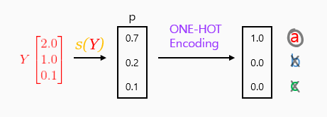
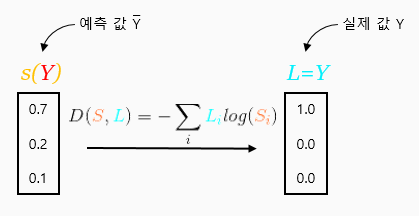
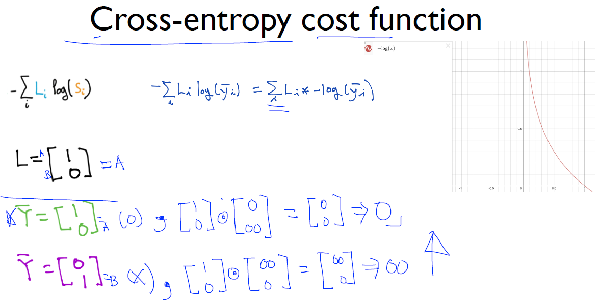
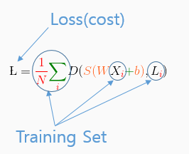

Logistic regression
Multinomial Classification
각각의 독립된 classifier


sigmoid?
Logistic Classifier를 통과한 후 계산 된 Y값에 대하여 분류 개수(예제에서는 3개)에 따라 Y값이 나뉜다.
 총 합은 1 :
각각의 p를 확률로 볼 수 있다.
 Cost function
CROSS-ENTROPY

Cross-entropy cost function
에서
를 plot해보면,
1에 가까워 질 수록 0에 가깝고, 0에 가까울 수록 무한대의 값을 나타낸다.
예측 값이 틀리게 되면 cost값이 매우 커지게 된다.
example

실제 값 B에 대한 예, 예측이 맞을 경우 cost = 0 틀릴 경우 cost = ∞

실제 값 A에 대한 예, 예측이 맞을 경우 cost = 0 틀릴 경우 cost = ∞
Logistic cost vs Cross entropy
교수님께서 결국 Logistic cost 함수와 cross entropy가 같다고 하셨다.
Logistic cost function
Cross entropy
logistic cost function에서 y = 0 or 1 값을 가지게 된다.
이때 y = 0 의 경우를 one-hot encoding 벡터로 바꿔보면,
y = 1 의 경우는, 와 같다.
이 때 y = L, H(x) = S 이므로 y = 0, 1 각각의 경우에 실 대입하여 적용 시켜 보면,
같음을 알 수 있다.
Total Cost(Loss) function
explanation
Gradient Descent
이전에 배운 Logistic Regression의 Gradient Descent와 마찬가지로 밥그릇 모양의 곡선으로, 시작점에 관계 없이 항상 Minimized cost로 도달할 수 있다.